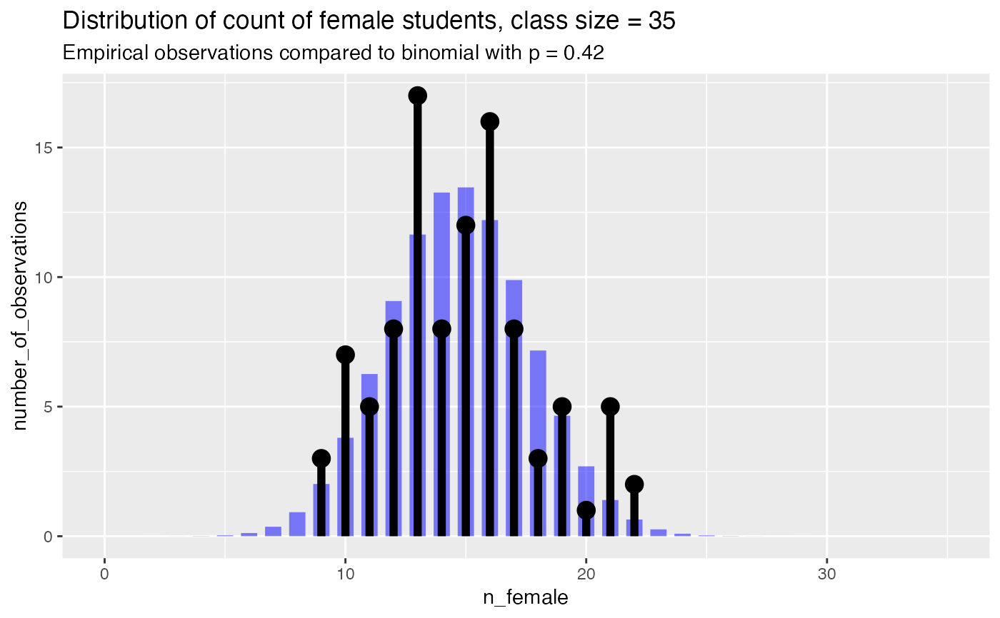

R/PlotDistCountBinomial.R
PlotDistCountBinomial.RdCompares empirical count data to a binomial distribution
PlotDistCountBinomial( frm, xvar, trial_size, title, ..., p = NULL, limit_to_observed_range = FALSE, count_color = "black", binom_color = "blue" )
| frm | data frame to get values from |
|---|---|
| xvar | column of frm that counts the number of successes for each trial |
| trial_size | the number of "coin flips" in a trial |
| title | title to place on plot |
| ... | no unnamed argument, added to force named binding of later arguments. |
| p | mean of the binomial. If NULL, use empirical mean |
| limit_to_observed_range | If TRUE, limit plot to observed counts |
| count_color | color of empirical distribution |
| binom_color | color of theoretical binomial |
This function is useful for comparing the number of successes that occur in a series of trials, all of the same size, to a binomial of a given success-probability.
Plots the empirical distribution of successes, and a theoretical matching binomial. If
the mean of the binomial, p, is given, the binomial with success-probability
p is plotted. Otherwise, p is taken to be the pooled success rate
of the data: sum(frm[[xvar]]) / (trial_size*nrow(frm)). The mean of
the binomial is reported in the subtitle of the plot (to three significant figures).
If limit_to_observed_range is TRUE, the range of the plot will only cover
the range of the empirical data. Otherwise, the range of the plot will be
0:trial_size (the default).
set.seed(23590) class_size = 35 nclasses = 100 true_frate = 0.4 fdata = data.frame(n_female = rbinom(nclasses, class_size, true_frate), stringsAsFactors = FALSE) title = paste("Distribution of count of female students, class size =", class_size) # compare to empirical p PlotDistCountBinomial(fdata, "n_female", class_size, title)# compare to theoretical p of 0.5 PlotDistCountBinomial(fdata, "n_female", class_size, title, p = 0.5)# Example where the distribution is not of a true single binomial fdata2 = rbind(data.frame(n_female = rbinom(50, class_size, 0.25)), data.frame(n_female = rbinom(10, class_size, 0.60)), stringsAsFactors = FALSE ) PlotDistCountBinomial(fdata2, "n_female", class_size, title)